Ingo Steinke
Creative Web Developer
Inspire Your Customers on the Internet
My name is Ingo Steinke. I am an enthusiastic and creative web developer from Düsseldorf with more than 20 years of professional experience. Customers who have benefited from my work include Frankfurter Allgemeine Zeitung, Die ZEIT, HDI, and wao.io. Currently I am a freelancer for the startup Planted from Cologne.
I can Work for You
Do you want to overhaul your website? Does your team need support from a front-end developer with full-stack experience?
Call me or leave a message!
It would be my pleasure to discuss your project over a coffee, with no obligations.
Projects
Make up your own mind about my work! A selection of my past projects:
Portfolio Relaunch
 My relaunched portfolio Ingo-Steinke.com illustrates my work as a web developer. Modern design and typography, cutting-edge technology, and extensive textual revisions characterize my updated professional portfolio. Code:
My relaunched portfolio Ingo-Steinke.com illustrates my work as a web developer. Modern design and typography, cutting-edge technology, and extensive textual revisions characterize my updated professional portfolio. Code:
github.com/openmindculture/ingo-steinke.de
HTML 5 CSS 3 JavaScript Liquid Eleventy
Meetup Management
 In early 2020, I assumed management responsibility for the Cologne web performance meetup. We held a series of international lectures by Patrick Meenan, Andrew Petryk, Anna Backs und Christina Zenzes, amongst others, to inspire an audience extending beyond the borders of the region.
In early 2020, I assumed management responsibility for the Cologne web performance meetup. We held a series of international lectures by Patrick Meenan, Andrew Petryk, Anna Backs und Christina Zenzes, amongst others, to inspire an audience extending beyond the borders of the region.
Event management Web performance
Plugin for WordPress
 This WordPress plugin to assist our customers' editors automatically purges the cache memory at wao.io's performance optimization servers. The plugin was released on WordPress.org in 2020.
This WordPress plugin to assist our customers' editors automatically purges the cache memory at wao.io's performance optimization servers. The plugin was released on WordPress.org in 2020.
PHP JavaScript Docker Localization
Plugin for Shopware
 My first Shopware 6 project was an administrative plugin facilitates load time optimization for online shops via an API. It has been released in the official Shopware store in 2020.
My first Shopware 6 project was an administrative plugin facilitates load time optimization for online shops via an API. It has been released in the official Shopware store in 2020.
Shopware 6 Symfony PHP Vue.js
React Web App
 wao.io's graphical user interface visualizes technical data and allows webmasters to configure how their websites are optimized. I developed and updated app components as a member of the front-end and support team.
wao.io's graphical user interface visualizes technical data and allows webmasters to configure how their websites are optimized. I developed and updated app components as a member of the front-end and support team.
React JSX ES6 CSS-in-JS Storybook
Performance Talk
 How to speed up my website? At the Cologne Web Performance Meetup, Angelina Farsch and me explained how website owners can analyze and optimize their site speed without changing the code.
Meetup Talk Jitsi
Small Business Website
 I built Kleiderordnung-Duesseldorf.de as a single page website with tab navigation in 2016. I adapted the graphical print design for flyers and business cards in collaboration with the designer.
I built Kleiderordnung-Duesseldorf.de as a single page website with tab navigation in 2016. I adapted the graphical print design for flyers and business cards in collaboration with the designer.
HTML 5 CSS 3 JavaScript PHP
Maker Project
 We built an interactive upcycling installation "Green Wall-E" out of wood, litter, and Arduino hardware, showing colourful light animations as a reaction to drought and watering. Our project won the first prize at the 2019 Sevenval hackathon.
We built an interactive upcycling installation "Green Wall-E" out of wood, litter, and Arduino hardware, showing colourful light animations as a reaction to drought and watering. Our project won the first prize at the 2019 Sevenval hackathon.
Arduino C++ Hackathon
Long-Lasting Solutions
I can implement your layouts across platforms, and pixel-perfectly if needed. My goal is to build long-lasting solutions that are elegant, transparent, and easy to maintain. Modular components, themes, and CSS frameworks simplify collaboration and further development. Continuous testing allows me to discover and eliminate errors at an early stage.
Full-Stack Experience
When enhancing existing code, I benefit from professional experience and a pragmatic approach. With back-end and DevOps experience and a high willingness to learn, I can also take charge of tasks that may arise besides front-end development.
Plugin Development
My preferred approach is to implement back-end interfaces as independent modules. For the web performance service wao.io, I developed plugins for Shopware 6 and the WordPress CMS. Both plugins were included in the official directories after being successfully tested.
Professional Skills
Web Development
- HTML
- CSS
- JavaScript
- PHP
- XML
- Datenbanken
Frameworks, Libraries
- ReactJS
- Vue.js
- node.js
- Symfony
- Eleventy
- jQuery
Other Tools
- Quality Assurance
- Source Control
- Linters, Transpilers
- DevOps
- Image Editing
- Web Design, DevUX, Collaboration
Work and Passion
What still fascinates me
Worldwide communication and inspiration: The World Wide Web connects people with robust and decentralized technology. Websites designed to offer everyone access to this network need to be attractive, fast, and accessible. My work helps to make this dream a reality.
Professional Background
I founded a start-up in 2000 whose first products were interactive websites and browser games. Later, our core business transitioned to search engine optimization and our Active-Webshop software.
While employed as an e-commerce engineer at Xsite from 2010 to 2014, I developed online shops for Shop-Apotheke.com, Ars mundi, and other customers. As a technical consultant at Sevenval Technologies (later Avenga Germany), I optimized the loading time and mobile phone compatibility of apps and websites for Frankfurter Allgemeine Zeitung and created front-end applications for wao.io and other customers. I have been a freelance web developer since late 2020.
Future Topics
In the IT industry, innovation, transformation, and digitalization often mean nothing but technological progress. In many cases, social challenges in ecology, equality, safety, and data protection do not receive the priority they deserve. I want to support ethical and ecological projects, for example the transition in the transport sector, renewable energies, or environmentally friendly fashion.
Talks and Events
At conferences, courses, and meetups I like to exchange ideas on a professional and personal level.
A selection of my past talks:
- Core Web Vitals: Web Performance and Usability , March 2021
- Meetups in Times of Covid , June 2020 (German)
- Performance Optimization without Changing Code with Angelina Farsch, April 2020 (German)
- HSTS: Increasing Security without Losing Performance , Dezember 2018 (German)
- Infrastructure for Improved Web Performance , May 2017 (German)
- Vocational Guidance: My Job! Your Job? , January 2017 (German)